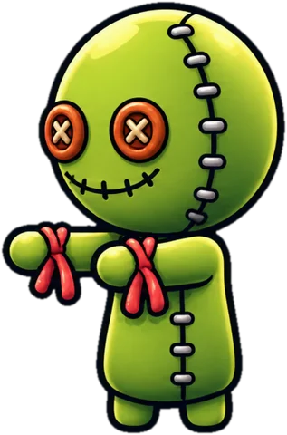

 Ghost
GhostTap a stage to read its story.
Stitchling is a small green stuffed figure held together by thick visible stitches and crowned with a neat red bow tie at its neck. Its X-marked button eyes glow faintly red, and it holds one small mitten hand forward as if offering something - though nobody is sure what. It wanders Ghost Hollow's fog-wrapped paths with an unsteady shuffle, as if its stuffing shifts with every step. Children of the hollow sometimes find Stitchlings sitting on their window sills overnight, bow ties perfectly straight.
Field note: Stitchling always faces directly toward the nearest living creature, even when no one can see it moving.
Ghost Hollow. Stitchling and its family are found in the Ghost Hollow. See everyone who lives there.
Share a Bond Food that matches its types to become friends. Stitchling loves:
A Bond Food is not a trick. It joins your spirit with the Kimuro's spirit, and only when it chooses you.
Print the Kimuro adventure packs: mazes, cards, a board game and Bond Mark medals.
See the printable packs